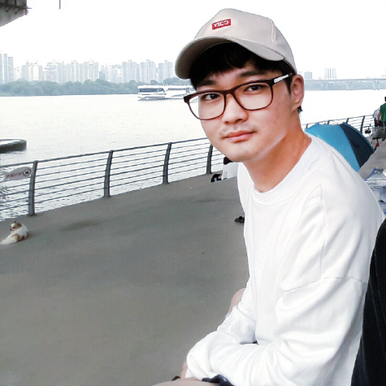

HELLO!!

- 임노성
Lim Nho Sung / 林魯星 - Phone 010-4477-4931
- E-mail lns0112@naver.com
- brithday 1991.01.12
Resume
Education
- 2010. 02 서서울생활과학고등학교 정보처리과 졸업
- 2016. 02 인덕대학교 미디어 아트앤 디자인과 학사 졸업
- 2018. 04 - 2018. 09(5개월 과정) 교육이수 - 스마트웹 & 모바일 콘텐츠 제작
Workexperience
- 2011. 05 - 2013. 02 행정병 육군(21개월 만기제대)
- 2013. 02 - 2014. 02 대진기업 임노성 주임 ※제조 및 시상품 디자인
- 2017. 01 - 2018. 01 (주)다나와 ※상품컨텐츠팀 사원 / 제품 상세페이지 디자인
Awards
- 2014. 12. 26 (사)한국일러스트협회 2014 SOKI국제 디자인&일러스트레이션 공모전 입상
- 2015. 07. 15 한국 디자인 트랜드 학회 한국 디자인 트렌드 학회 공모전 입선
- 2016. 06. 28 (사)한국일러스트협회 2016 SOKI국제 디자인&일러스트레이션 공모전 특선
License
- ㆍ2005. 08 정보처리 기능사
- ㆍ2006. 06 정보기기 기능사
- ㆍ2007. 07 컴퓨터 활용 능력 2급
- ㆍ2007. 11 워드프로세스 1급
- ㆍ2009. 06 정보기술자격ITQ Master
- ㆍ2009. 12 자동차운전면허 1종보통
- ㆍ2010. 11 Mos Master
Software Skills
Photoshop / illustrator90%
HTML5 / CSS370%
jQuery/Javascript50%
Interests


Introduction
# 꾸준함과 꼼꼼함의 습관화!
2013년부터 현재까지 매일하고 있는 데일리 리포트와 2016년부터 교회의 회계와 총무를 겸하게 되면서 습관이 되었습니다. 지극히 외향적이기만 했기에 관심의 폭이 넓긴 했지만 깊이가 얕았고, 사색보단 대화를 더 좋아했기에 덜렁거리는 경향이 많았습니다. 단점을 보완해 보고자 시작했던 일들이 3년이 되어가니 어느새 습관이 되어있었고, 이젠 불가피한 상황에 대비하여 시간을 재분배하는 나름의 대책까지 계획할 수 있게 되었습니다.
# 본질의 가치를 잃지않는 토론
2년째 독서모임을 하고 있습니다. 초반에는 '독서'의 의미를 몰라 절대적 수용을 했기에, 비판적 수용이 자연스러운 회원들과의 토론이 어려웠습니다. 1년간은 하나의 주제로 여러작가들의 책을 읽으며 견해와 주장의 다양함을 알게됐고, 독서 후 토론으로 교류하며 편견을 버리는 법, 견해를 좁히는 법 등을 서서히 익혀 사고의 확장을 이룰수 있었습니다. 2년쯤 지나니 누구와도 원활한 커뮤니케이션이 가능했고, 더나아가 견문이 넓어지는것 또한 느꼈습니다. 그냥 평범하고 소비지향적이며 자신을 함부로 대하며 마음대로 막살지만 결국은 평안하고 안락한 삷을 원하는 사람들과 다른 선택을 하고 싶었습니다. 여전히 '삶의 참된 의미' 를 확실하게 정의 내릴순 없지만, 철학과 세상에 대한 고뇌와 젊음의 버거움을 안고 '본질탐구'를 합니다. '좋은 사람이란 자기 안에 다른 사람을 살게 하는 사람' 이라는 글귀를 보았습니다. 이타적이 이기심 이라는 말들이 있지만, 그래도 이것이 시작인것 같습니다. 세상은 혼자 사는게 아니고, 행복은 혼자선 무의미하니까요. 이렇게 몸으로 마음으로 배우고 익힌 것들이 물질적으로 어디까지 생산적일수 있을지 모르겠지만, 본질의 가치를 알았기에 언제나 옳을순 없어도 '바른', 본질을 잊지않는 '진정한 행복'을 찾기위해 오늘도 책을 읽습니다.
# 실무경험의 노하우!
유년시절부터 디자인에 관심이 많아 잡지와 외국 일러스트 책자들을 사서 보기 시작했습니다. 디자인 회사를 운영하고 싶은 마음에 덜컥 경영학과로 입학하였습니다. 그러나 단지 경영이 아니라 본질을 놓치고 있다는 생각에 군 전역 후 디자인과로 전과를 하여 디자인의 본질과 이론에 대해 구체적으로 배울수 있었습니다. 졸업 후 디자인 회사에 입사를 해보니 학교의 이론과 달리 실무에선 실질적 활용에 중점이 되어 스킬을 향상시킬 수 있었습니다. 그러다 우연히 웹으로 화면이 구현 되는 모습을 보고 관심이 생겨 웹에 관련된 서적들을 찾아 독학하기 시작했습니다. 제가 기획한 디자인을 웹으로까지 구현시키면 멋있겠다는 생각에 퇴사를 결심하고 전문 교육과정을 통해 전문적이고 체계적인 공부를 하기로 했습니다. '스마트웹&모바일 콘텐츠 제작' 교육과정을 통해 UI/UX디자인, HTML5, CSS3, Javascript를 익히니 기본기가 다져짐에 뿌듯했습니다. 5개월에 교육과정동안 매일 아침엔 1시간씩 운동을 하고 수업을 들으러가고, 9시간의 수업이 끝나면 밤까지 자습을하며 다양한 접근법을 공부했습니다. 교육과정에는 기본 CSS3만 있었기에, 실무 활용도를 높인 scss는 독학을 해야 했습니다. 그래서 과정수료 후 현재까지 관련 서적과 빔캠프, 생활코딩 등 실무에 쓰인다고 하는 강좌들을 찾아 매일보고 익히며 업무 기회가 주어졌을때 능동적이고 적극적으로 임하기위한 준비를 하고 있습니다.
# 퍼블리셔로서의 포부
디자인을하며 기본교육과 실무가 다르다는것을 알았습니다. 퍼블리셔 또한 마찬가지겠지요. 웹 교육기간 동안 가장 중요하다고 생각했던 부분은 화려하고 다양한 코딩 스킬로 장황하게 늘어놓는 포트폴리오가 아니었습니다. 웹표준에 근거하여 구조화 시키며, 스스로 생산자이자 동시에 소비자라고 생각할 줄 아는 사고의 유연함이 본질이라고 느꼈습니다. 아직은 실무를 접해볼 기회가 없었지만, 본질에 근거해서 실무의 스킬을 습득한다면 흔들림 없는 성장을 할수 있으리라 생각합니다.